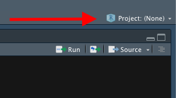
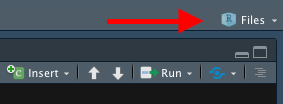

R Resources
Michal Malyska
To avoid copypasting the R setup and guides into every course material file I will be hosting all of the R resources here and link from courses to specific chapters.
R Setup
Downloading R and Rstudio.
Downloading important packages
Open Rstudio, and navigate to the console. Then run the following commands to get the packages I highly recommend you get:
install.packages(c(‘gridExtra’,‘tidyverse’,‘plotly’, ‘GGally’))
You might need to replace the quotation marks if you copypaste this.
This will install all the packages we should need for the class and beyond. Whenever you want to add a package you can either call the command:
install.packages(<quoted package name>)
or navigate to the Files and plots pane in Rstudio, click on packages, then install, and type in the name.
Note that you only need to do this once, and the packages will remain for any R script you are writing.
Learning
There is a number of resources available for you to learn and master the tidyverse package, which is what you will be using if you ever work with R. It’s technically not required for the course but it will make your life a lot easier.
Learn R with tidyverse - this on it’s own should give you good enough background to handle most of the coding you will ever do in R, both in class, and in a professional setting.
Advanced R with tidyverse - far beyond the scope of what’s needed for the course, but a great resource if you want to get involved with R.
Cheatsheets - very useful set of cheatsheets that you should probably keep open whenever you are working with tidyverse. (Especially the visiualization one)
GGPlot Flipbook - The best resource to get familiar with the slightly unintuitive syntax of ggplot.
Some other packages you should consider looking into, that will come handy during this class:
“car” - it is “the package” for regression models.
“summarytools” - contains function “dfSummary” which is the fastest way to get meaningful first glance at the data. It’s a good compromise between the ease of using “summary” or “glance”, and providing as much information as possible.
“forcats” - package for working with factors in r, part of the tidyverse family but not included in the tidyverse itself.
Just to cover all bases below I will show you the simple workflow that I follow when working with a new dataset, like you will be doing during this class.
RStudio Setup and settings
If this is your first time using RStudio, you should adjust your settings:
Navigate to Tools -> Global Options
Change “Save workspace to .RData on exit” to Never
Uncheck “Restore .RData into workspace at startup”
This is what mine look like:

Now, every time you want to start working on something, you should begin by creating an Rproject. This helps you keep track of the files, sets your working directory so that data loading is easier, and you should do it almost always.
Now that we have all that out of the way let’s start with what to do once you have RStudio open and ready to work.
File Setup
Since you will need to create pdfs from your code with figures and equations you will be using the knitr package and will be working in .Rmd files. This is the most common way to write anything in R that isn’t pure code. Make sure you have some distribution of LaTeX downloaded as it is necessary to create the pdfs. I recommend MikTeX, but it shouldn’t matter which one you have for this course.
When you create a new .Rmd file you will notice that at the top it will have a header containing the file title, your name and date. If you want to add a table of contents (which is created from headers) just change the output line to look like this:

To actually work with pdf creation you will need to download a LaTeX distribution. Navigate to this link, and download the appropriate one (MacTeX for Macs and MikTeX for Windows).
After you are done restart your R.
How to work in R without pain
Projects
Each time you work on a new “thing” whether it be a course, or research, I recommend you set up a project. The way to do it is:
Open RStudio
Look in the top right corner, you will see a project icon.

- Click it and select New Project, then select New Directory

- Create your new folder (It creates a regular folder with a special file inside)

Now whenever you work in RStudio just open up the project and work there. It will automatically set your working directory to that folder, and open up all the files you had open previously. You can tell that the project is open by looking in the top right corner again. This website is written in an RProject I called “Files” so when I look in my top right corner I see this:

Once you are in a project you should work in RMarkdown files, and knit them to pdf. That way you get very crisp, clean project reports.
Packages
At the start of each file you should also load ALL the packages you will be using. Please don’t scatter library calls throughout your file.
knitr::opts_chunk$set(cache = TRUE)
library(gridExtra)
#library(summarytools) ### There is a problem with summarytools on the current R version
library(tidyverse)
library(forcats)
library(GGally)
set.seed(1337) # This line makes the random generation for this file be the same
# Every time it is runLoading data
First let’s see how we would load data from a downloaded “.csv” file:
The example dataset will be the one create for the Actuarial Students National Association case competition technical challenge from this year. If you are interested in how the data was created you can check out the personal projects tab and find it under “ASNA Case Comp”.
# Load in the example.csv file that is in the working directory (this is assuming either the project
# was created or manual change of working directory happened before this line)
# Using Base reading (not advised)
data1 <- read.csv("training_data.csv")
# Using Tidyverse loading
data2 <- read_csv("training_data.csv")## Parsed with column specification:
## cols(
## id = col_double(),
## Education = col_character(),
## EmploymentStatus = col_character(),
## Income = col_double(),
## `Marital Status` = col_character(),
## `State Code` = col_character(),
## Coverage = col_character(),
## Gender = col_character(),
## `Location Code` = col_character(),
## `Monthly Premium Auto` = col_double(),
## `Months Since Last Claim` = col_double(),
## `Months Since Policy Inception` = col_double(),
## `Number of Open Complaints` = col_double(),
## `Number of Policies` = col_double(),
## `Claim Reason` = col_character(),
## `Sales Channel` = col_character(),
## `Vehicle Class` = col_character(),
## `Vehicle Size` = col_character(),
## `Claim Class` = col_double()
## )# Load data specifying all possible options:
data3 <- read_csv(file = "training_data.csv", # file path relative to WD
col_names = TRUE, # Does the file include column names
na = c("", "NA", "N/A"), # What are the missing values in the file
#(specified in a vector)
quoted_na = TRUE, # should missing values inside of quotes be missing
skip = 0, # How many lines to skip
n_max = Inf, # How many lines to read at most (Inf = infinity)
guess_max = 10000 # How many records to use to guess the type of column
# if not specified in col_types = c()
)## Parsed with column specification:
## cols(
## id = col_double(),
## Education = col_character(),
## EmploymentStatus = col_character(),
## Income = col_double(),
## `Marital Status` = col_character(),
## `State Code` = col_character(),
## Coverage = col_character(),
## Gender = col_character(),
## `Location Code` = col_character(),
## `Monthly Premium Auto` = col_double(),
## `Months Since Last Claim` = col_double(),
## `Months Since Policy Inception` = col_double(),
## `Number of Open Complaints` = col_double(),
## `Number of Policies` = col_double(),
## `Claim Reason` = col_character(),
## `Sales Channel` = col_character(),
## `Vehicle Class` = col_character(),
## `Vehicle Size` = col_character(),
## `Claim Class` = col_double()
## )# This is to remove two of the redundant data files from my wd
df <- data3
rm(list = c("data1", "data2", "data3"))In most cases you will want to specify at least some of the parameters from the cell above, especially helpful is guess_max, and na. However in this course we will be working mostly with nicely formatted data so it shouldn’t be an issue.
Analyzing Data
I will skip showing you base R way of analyzing data, I’ve never seen it used outside of classes, and is neither easier nor faster. If you are really interested and want to work in a field that has extremely harsh regulations regarding software (clinical trials maybe?), you can use the swirl package to learn how to do it.
## There is a problem with summarytools on the current R version
# Take a first glance at the data:
#dfSummary(df)As you can see the summary provided by the dfSummary function is quite comprehensive. You see the type, what percentage of values is valid (non-missing), the simple summary (mean, median, sd, etc), a nice ASCII plot of the distribution(!!!) of data, and the number of observations in the most common values. If you were to use base R to get all of this, it would probably be around 5-6 lines of code per column of your data.
Now I will show you how to create a summary datasets using tidyverse and wrangle the data in general. There are a few very important functions you should learn:
mutate - create a column as a transformation of existing columns
select - select a subset of columns
filter - filter only rows fuliling the criteria
rename - rename a column
group_by - allows you to group your data based on a data column
summarize - self explanatory
One more very important part of the tidyverse is the pipe operator %>% which feeds the results of one function as the first argument to the next function. It makes the code a lot more readable and allows you to write it in a better way since you don’t go in to out but rather in order.
Below I will show you some examples of how I would create some potentially interesting summaries of data:
summary1 <- df %>% # This line specifies the new dataset name, and starting data + pipe into
dplyr::select(`Vehicle Size`, `Claim Class`, `Monthly Premium Auto`, Coverage, `Marital Status`) %>%
# I select only the few columns of interest
filter(`Monthly Premium Auto` > 65) %>% # I only want the people that have Auto premiums above
# 65, this will usually come from the business or research question you are trying to answer
group_by(`Vehicle Size`, Coverage, `Marital Status`) %>% # I want to summarize
#them by the categorical variables
summarise(mean_prem = mean(`Monthly Premium Auto`), # I want to have mean auto premium
count = n(), # Count of those vehicles
avg_sev = mean(`Claim Class`) # I want to have the average Claim Class (severity)
)
# Now I will take this created summary and analyze it further:
summary2 <- summary1 %>%
mutate(Total_Premium = mean_prem * count) %>% # I create the total premium from the group
# as Average Premium * count of policies in that group
filter(Total_Premium > 100000) # Filter out lines of business that are
# under 100k in total premium
# This is the subset of data that might be of interest to me, let's look at it again:
## There is a problem with summarytools on the current R version
# dfSummary(summary2)Normally at this point I would be making some simple graphs and reporting back to the business what they wanted to know, or digging deeper for causes depending on the communicated need. If this was part of my own project I would try to investigate further why there are not that many large cars in our book and why are the “Premium” coverages not a big part of our business.
To get started with the visualisation part, I will prepare some simple graphs from the newly obtained summary data. The main plotting function we will be using is ggplot2 (as opposed to built in functions), the syntax is not very intuitive at first, and there are some kinks you will have to figure out, but ultimately the combination of dplyr (tidyverse) data wrangling and analysis with ggplot2 plotting makes for a very powerful and simple to use set of tools.
plot <- ggplot(data = summary2, # Create a plot object, from summary2
mapping = aes(x = `Vehicle Size`, # x axis is Vehicle Size
y = `Total_Premium`, # y axis is Total Premium
fill = Coverage)) + # The inside of the figures is colored by coverage
geom_col(show.legend = TRUE) + # Add a column plot (barplot is for frequencies in ggplot2)
coord_flip() + # Flip the chart to be sideways
theme_minimal() + # Set the minimal theme
labs(title = "Simple plotting illustration", # Add title
x = "Vehicle Size", # Rename X axis
y = "Total Premium($)") # Rename Y axis
plot # Show the plot